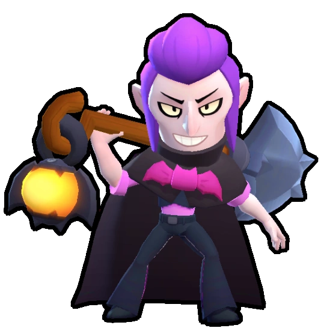

¿Quién es Mortis?
Mortis avanza a palazos. Su súper consiste en invocar una bandada de murciélagos para queinflifan daño a los enemigos y así poder curarse a sí mismo.
Mortis es un Brawler Mítico quien es un vampiro sepulturero. Mortis tiene una pala, la cual usa para atacar y desplazarse a la vez. Mortis tiene una vida relativamente alta, daño moderado y una velocidad de recarga increíblemente lenta. Sin embargo, Mortis tiene la habilidad de desplazarse con cada ataque, haciéndolo un brawler muy móvil. Con su súper, Mortis invoca una veloz bandada de murciélagos en una línea recta que ignora obstáculos, daña enemigos y cura a Mortis a la vez.
|  |
NIVEL DE FUERZA 11 |
Sus gadgets
PALA ROTATIVA: Mortis hace girar la pala y golpea a todos los rivales que se encuentren a su alrededor, infringiendo 1880 de daño. |
PALA DE SUPERVIVENCIA: El ataque de Mortis se recarga más rápido durante 4 segundos. |
Sus habilidades estelares
 |
RECOLECTOR DE ALMAS: Mortis recolecta las almas de los enemigos que derrota. Cada alma le hará recuperar un 20% de puntos de salud. |
 |
ATAQUE INESPERADO: Mortis adquiere su aumento de alcance 2.5 segundos más rápido.." |
Su hipercarga
BOOMERANG DE SANGRE: La súper de Mortis vuelve hacía el, dandole el doble de daño y de salud. |
 Braian Arancibia
Braian Arancibia Aya El Baarar
Aya El Baarar